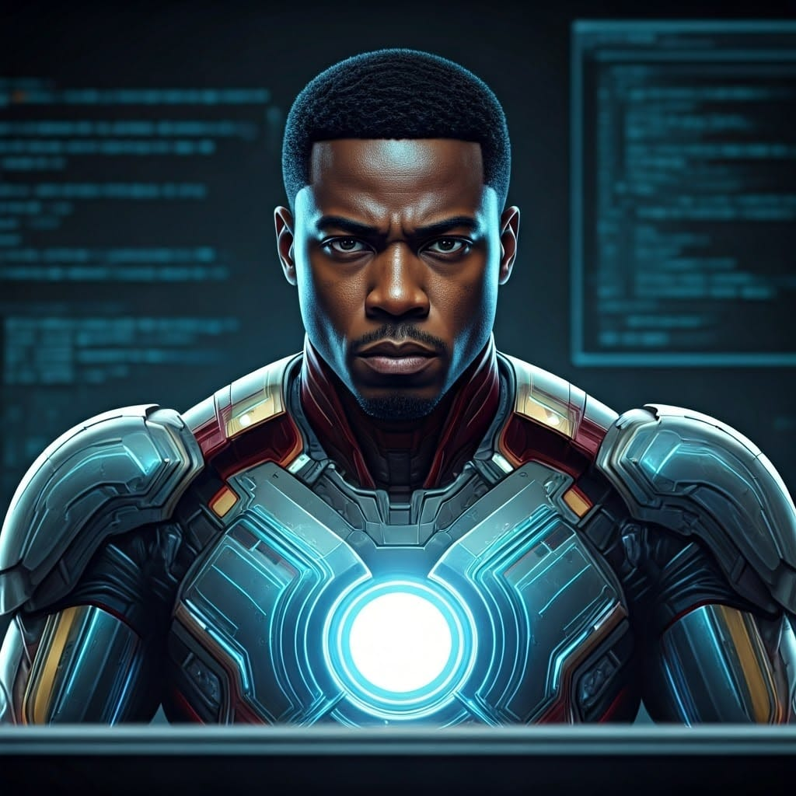
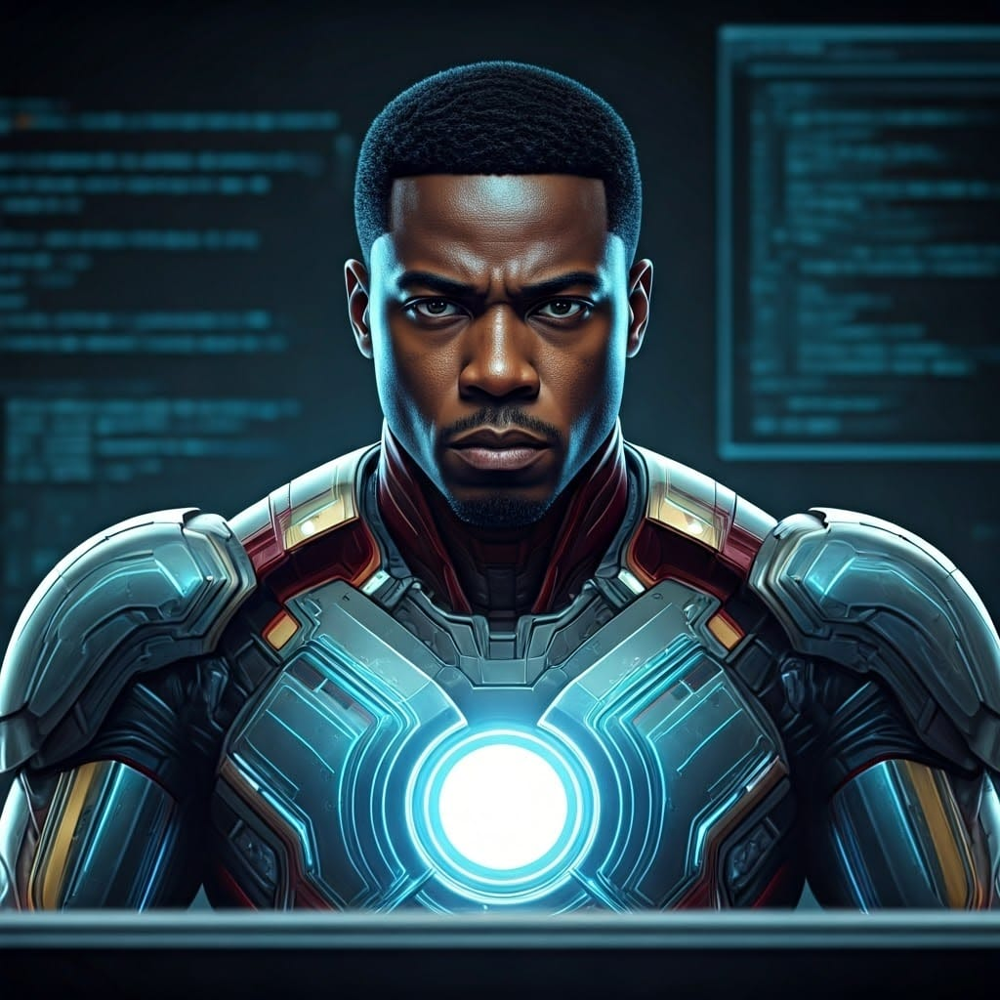

Uma breve história da minha vida
Meu nome é Edvaldo. Nasci em 24 de outubro de 1981, em uma família modesta da cidade de Cuiabá, onde desenvolvi valores essenciais à minha formação. Desde cedo, enfrentei desafios financeiros que me impulsionaram a iniciar minha vida profissional precocemente.
Após concluir o ensino médio em 1999, trilhei minha carreira profissional com cursos técnicos, voltado a área de informática, manutenção de computadores,Segurança privada, Telemarketing e Vendas.
Em 2011, ingressei na área de Tecnologia com a Faculdade de Segurança da Informação. Infelizmente, circunstâncias adversas me levaram a interromper temporariamente essa trajetória.
Trabalhei no setor privado em uma empresa de grande porte do ramo varejista por 5 anos, destacando-me como um dos melhores profissionais de vendas. Desenvolvi diversas habilidades no atendimento ao cliente, solução de problemas.
Também trabalhei em uma multinacional conhecida mundialmente, por 5 anos.
Conquistando várias premiações por bater metas e desafios.
Adquiri habilidades em marketing, vendas externas, introdução de novos produtos dentro de um mercado cada vez mais competitivo, aprendi técnicas de negociações, foi realmente uma grande caminhada.
Em 2017, fui aprovado em um concurso público da Secretaria de Saúde de Várzea Grande, garantindo estabilidade profissional e oportunidade de continuar meus estudos.
Tive a oportunidade de obter minha formação em Gestão Pública em 2022.
Minhas habilidades como gestor público incluem:
Habilidades Técnicas
1. Conhecimento de políticas públicas
2. Planejamento estratégico
3. Gestão de recursos
4. Análise de dados
5. Tecnologias da informação
6. Legislação e regulamentação
Habilidades Gerenciais
1. Liderança
2. Gestão de projetos
3. Comunicação eficaz
4. Negociação e mediação
5. Gestão de conflitos
6. Desenvolvimento de equipes
Habilidades Comportamentais
1. Ética e integridade
2. Responsabilidade social
3. Adaptação a mudanças
4. Trabalho em equipe
5. Resolução de problemas
6. Aprendizado contínuo
Conhecimentos Específicos
1. Orçamento público
2. Gestão de riscos
3. Qualidade e produtividade
4. Gestão ambiental
5. Tecnologias emergentes
6. Gestão de crises
Não satisfeito com minha formação, parti em busca de um sonho interrompido há anos atrás, a formação na área de tecnologia, com o curso de Análise e Desenvolvimento de Sistemas.
Neste curso, estou obtendo conhecimentos como:
Habilidades Técnicas
1. Linguagens de programação (Java, Python, C++, JavaScript)
2. Desenvolvimento web (HTML, CSS, React)
3. Banco de dados (MySQL, MongoDB)
4. Sistemas operacionais (Windows, Linux)
5. Ferramentas de desenvolvimento (Visual Studio, Eclipse)
6. Segurança cibernética (Criptografia, autenticação)
Habilidades de Desenvolvimento
1. Análise de requisitos
2. Projeto de sistemas
3. Desenvolvimento de software
4. Testes e validação
5. Implantação e manutenção
Habilidades Gerenciais
1. Gestão de projetos
2. Liderança
3. Comunicação técnica
4. Negociação e mediação
5. Gestão de riscos
Habilidades Comportamentais
1. Trabalho em equipe
2. Aprendizado contínuo
3. Resolução de problemas
4. Adaptação a mudanças
5. Ética profissional
6. Comunicação eficaz
Conhecimentos Específicos
1. Inteligência Artificial
2. Internet das Coisas (IoT)
3. Realidade Virtual e Aumentada
4. Blockchain
5. Cloud Computing
6. Cybersegurança
"A busca pelo conhecimento é uma jornada sem fim, e cada descoberta é um degrau para a sabedoria."
Edvaldo N.Prieto